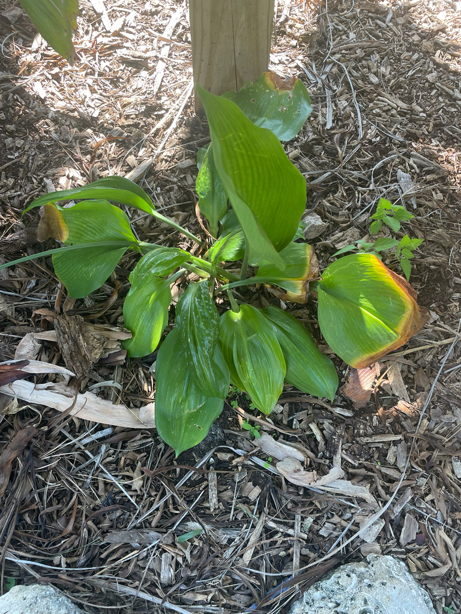

Native to the shaded, humid forest floors of the western Amazon basin — Peru and Colombia, in the foothills of the Andes. A bulb of the amaryllis family adapted to deep dappled shade, which is why it thrives low and protected here on Bird of Paradise Island rather than out in the open sun.
The Amazon Lily's fragrant white flowers can draw the occasional bee or butterfly, but it offers little nectar and isn't a significant wildlife plant in Florida. Its value here is human and historical rather than ecological: a deep-shade groundcover bulb that anchors the understory of Bird of Paradise Island and carries 140 years of the park's family history.
Reproduces readily by offsets — daughter bulbs that form around the parent — exactly how it has been propagated and passed down here for generations. Slow, reliable, and tolerant of crowding; it blooms better slightly rootbound.
Clusters of 3 to 6 pure white, fragrant flowers on a leafless stalk; each has six spreading tepals around a green-tinged central staminal cup, daffodil-like. Sweetly scented. Blooms one or more times a year, often in the cooler months.
Broad, glossy, dark green, ribbed — somewhat like peace-lily or hosta foliage, rising directly from the bulb.
On Bird of Paradise Island, look low and to the middle, beneath the giant Bird of Paradise plants, near the Yellow Elder and Geiger tree. Find the historical placard — that's your marker. In good seasons, watch for broad glossy leaves and fragrant white flower clusters held above them.
Not edible. Mildly toxic if ingested. As a member of the amaryllis family, the bulb and foliage contain lycorine-type alkaloids that can cause nausea and vomiting. Mildly toxic to dogs as well — the bulb is the most concentrated part. Not a serious risk for healthy adults but keep away from young children and pets.